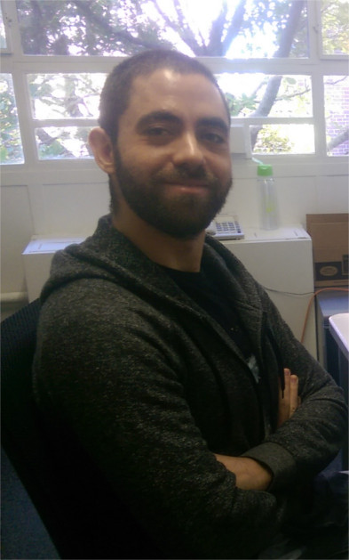

WelcomeI am an Associate Professor at the Institute of Radio Astronomy and Astrophysics (IRyA) at UNAM Morelia. I was previously a Postdoctoral Fellow at Johns Hopkins University, working with Jennifer Lotz on statistical methods to measure galaxy morphology. I completed my PhD in Astronomy & Astrophysics at Harvard University in 2016 under the supervision of Lars Hernquist, obtaining also a Secondary Field in Computer Science and Engineering. My thesis work focused on studying galaxy mergers from a statistical perspective and developing new tools to analyze large cosmological simulations. A summary of my research can be found here. A list of my refereed publications can be found here. My CV can be found here. ContactVicente Rodriguez-GomezInstituto de Radioastronomía y Astrofísica Universidad Nacional Autónoma de México Apdo. Postal 72-3 58089 Morelia, Mexico (vrodgom.astro //at\\ gmail.com) |
 |
| Background image: Greg Snyder & the Illustris Collaboration |